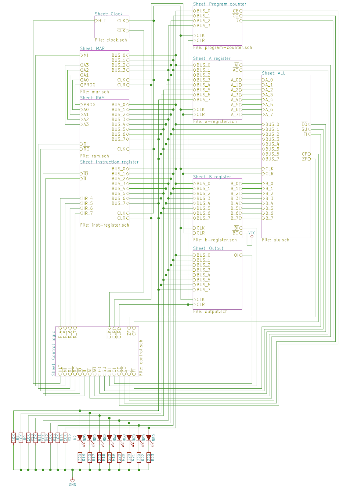

During my freshman year at college I stumbled upon the great Ben
Eater’s youtube video about programming his 8-bit breadboard computer.
At the time of watching this video I didn’t really understand what was
happening, but was fascinated by the video. A few years later, I
finished my Design of Digital Computers lecture and revisited the
video series and this time around I was able to follow the logic.
Afterwards, I decided to build my own version of the computer using
the RISC architecture that was taught.
Tools, libraries, frameworks, etc.
PSpice, Arduino Uno, Wire cutters, Oscilloscope, Function Generator,
Multimeter
Detailed Project Description
The project can be separated into multiple sections:
Clock Module
Registers
Arithmetic Logic Unit
Random access memory
Program counter
Output register
Control Logic

Source: Ben Eater Clock Module:
The clock was created by programming an ATTiny that I had laying
around at the time. While it can be argued that using an ATTiny for a
computer clock is a little overkill it was what I had laying around
and being the thrifty college student that I was, decided to use it.
Using a potentiometer the clock was able to adjust the speed from 1Hz
to a few hundred. A button was added to be able to advance the clock
through one clock cycle for easy debugging.
Registers:
The registers used were simple 8-bit registers that used a bus
transceiver to connect to the bus if needed.
Arithmetic Logic Unit:
The ALU design that was created allows for three operations to be
performed. Opcode 001 performs the AND operation between the
accumulator (ACC) register and memory buffer register (MBR). Opcode
010 performs the ADD operation between the two registers and opcode
value 100 performs the SUB operation.
Random Access Memory:
The RAM used only has 4-bit addresses which means the computer only
has access to 16 bytes. The data stored in the RAM is the instruction
set for each opcode. Since we only have three instructions, 16 bytes
is more than sufficient.
Program Counter:
The program counter is a simple binary counter that shows which
instruction the computer is currently executing. The program counter
will be connected to the RAM which takes the data and sends it to the
control unit.
Output Register:
The output register is just the accumulator value being sent to a
display. This will convert the 8-bit binary data into a more readable
format.
Control Logic:
The control logic essentially tells the computer what to do on each
opcode. During the AND operation clock cycle 1 will have the MBR
receive the data from memory and during cycle 2 the ACC will receive
the value from the bitwise AND between the MBR AND ACC. A similar
procedure is done for the other two instructions.